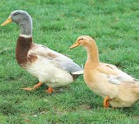
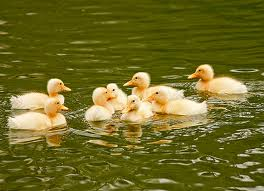
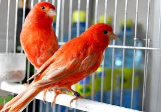
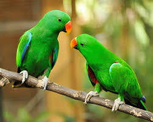
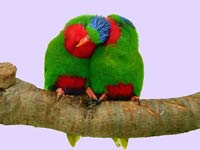
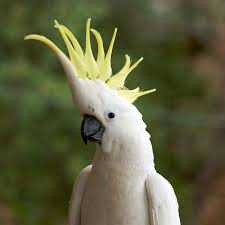
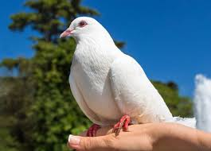

PATOS
Algunos patos se alimentan principalmente de la vegetación y de los invertebrados adultos que se encuentran cerca de la superficie del agua. Otros se alimentan de plantas acuáticas a poca profundidad y de los invertebrados inmaduros que se esconden en el fondo fangoso de estanques y lagos. Llegan a vivir de 15 a 20 años. Su comportamiento está muy sincronizado con los cambios climáticos estacionales y se ajusta a ellos.
 Más informacián...
CANARIO
Generalmente la mayor parte posee un tamaño que ronda los 13 o 14 cm. Su esperanza de vida es, según la raza, de 6 a 15 años, algunos incluso llegan a una edad de 20 años. Su dieta se compone principalmente de semillas, tales como las de las malas hierbas, las de poáceas y frutos. También se alimenta de otros partes vegetales y de pequeños insectos.

Más información...
LORO
A los loros domésticos hay que proporcionarles una alimentación adecuada y variada, con semillas, como el girasol o el mijo, diversas frutas, etc. Un veterinario especializado en mascotas exóticas indicará la mejor dieta para el tipo de loro que se posea, para garantizar una correcta alimentación que le proporcionará un estado de salud óptimo.

Más información...

PERICOS
As el más indicado para quienes tienen por primera vez un pájaro como mascota. Son por lo general animales pequeños (20 cm aproximadamente), que con buenos cuidados pueden vivir hasta 12 años. En cuanto a los cuidados de los pericos no son muy exigentes: mantener su jaula limpia, en un sitio con buena iluminación, pero que no le dé de frente el sol, dejarlos salir eventualmente para que vuele un rato; pueden ser alimentados con avena o alpiste.
CACATÚA
Son aves relativamente grandes con 30 centímetros y pueden llegar a vivir hasta 25 años. Son aves que inicialmente pueden parecer un tanto nerviosas pero que poco a poco van ganando confianza y desarrollando una relación estrecha con su propietario, con el tiempo pueden llegar a aprender palabras y silbar alguna tonada. Requieren de una jaula grande y la alimentación incluye una mixtura especial para este tipo de aves además de una porción diaria de frutas y vegetales frescos y eventualmente trozos de huevo cocido, o gusanos que se pueden adquirir en una tienda especializada.
PALOMAS
Palomas y tórtolas. Son buenas voladoras y tienen dieta variada, aunque son aves herbívoras.
Existen más de 300 especies de diferentes formas, tamaños y colores. En realidad, su denominación no hace referencia a criterios taxonómicos, simplemente las palomas son aves más grandes que las tórtolas.
